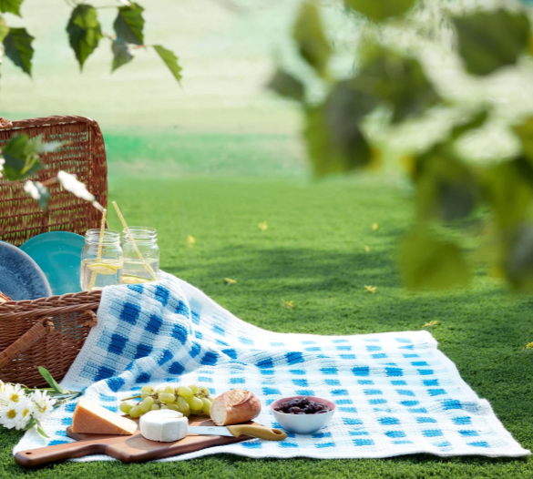
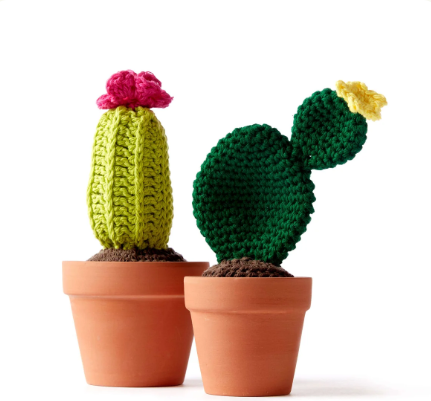
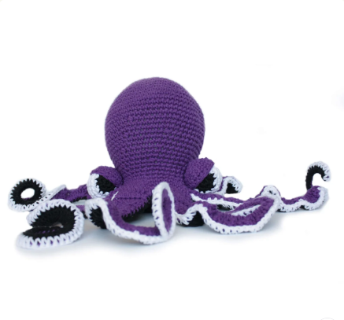
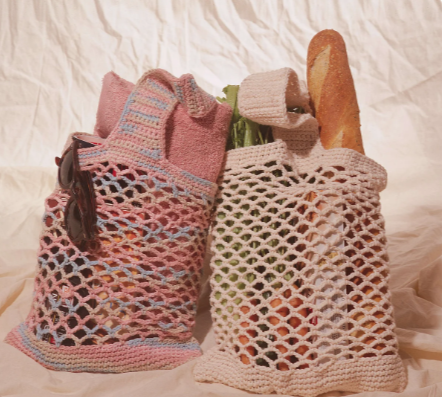
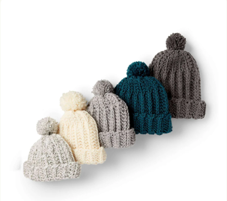
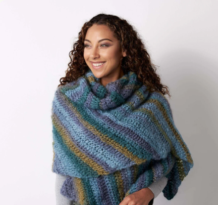

Free Crochet Patterns
Welcome to our collection of free crochet patterns! Whether you're a beginner or an experienced crocheter, you'll find a variety of patterns to suit your needs. Explore our selection and start creating beautiful crochet projects today!

Picnic Blanket
Beginner-friendly pattern for a cozy and colorful picnic blanket. This pattern is great for creating a comfortable blanket for outdoor picnics, relaxing at the park, or adding a handmade touch to your home.

Cacti Pattern
Beginner-friendly pattern for a pair of adorable crochet cacti. These low-maintenance decorations are a fun way to add a little color and personality to your room without needing to water them!

Octavia the Octopus
Beginner-friendly pattern for a cute and cuddly crochet octopus. With her rounded body and curly tentacles, Octavia makes a fun handmade toy or a charming gift for friends and family.

Market Bag
Beginner-friendly pattern for a stylish and reusable crochet market bag. Its lightweight design makes it perfect for carrying groceries, books, or everyday essentials while adding a handmade touch to your shopping trips.

Family Hat
Beginner-friendly pattern for a warm and cozy crochet hat that can be made in different sizes and colors. Create matching hats for the whole family or customize each one with your favorite yarn.

Shawl
Intermediate crochet pattern for a beautiful and comfortable shawl. Its flowing design makes it a versatile accessory that can be worn over casual outfits or dressed up for a special occasion.